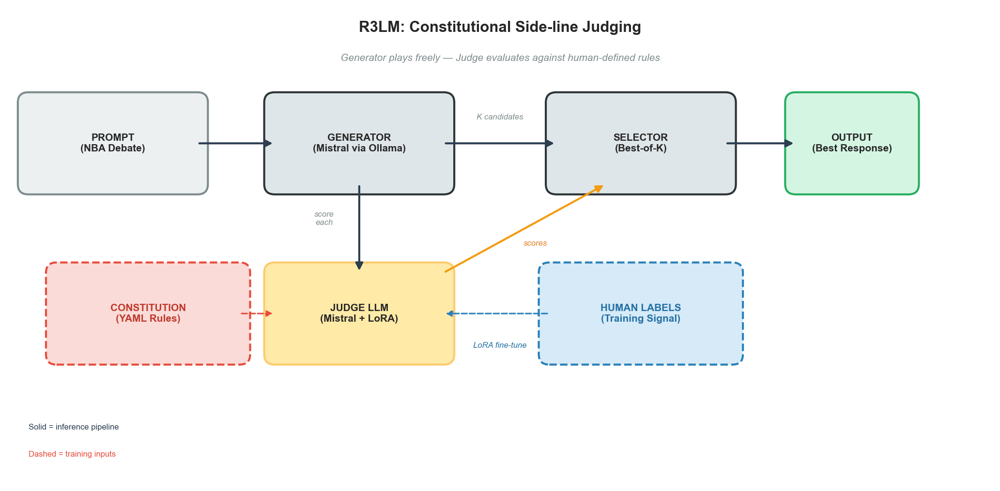
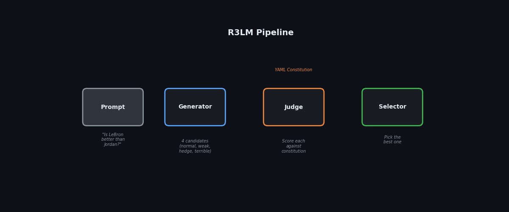
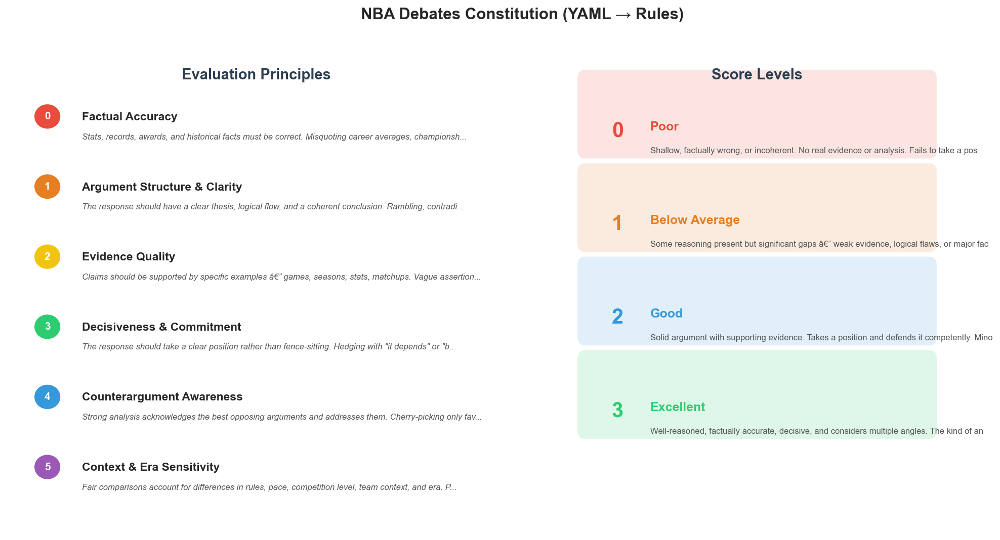
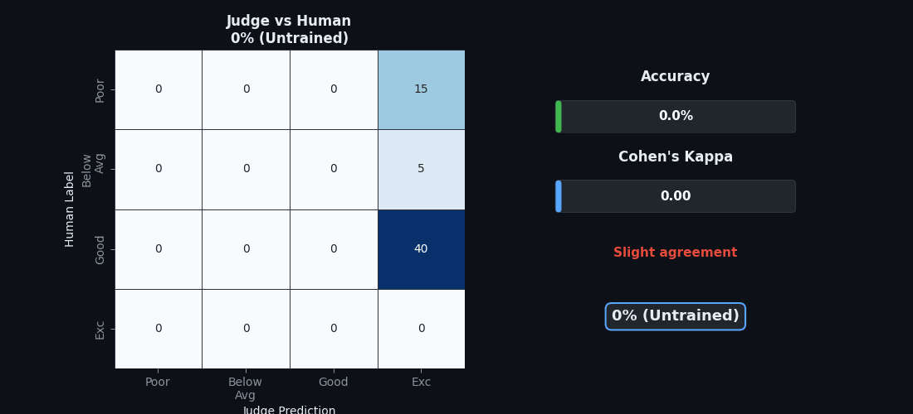
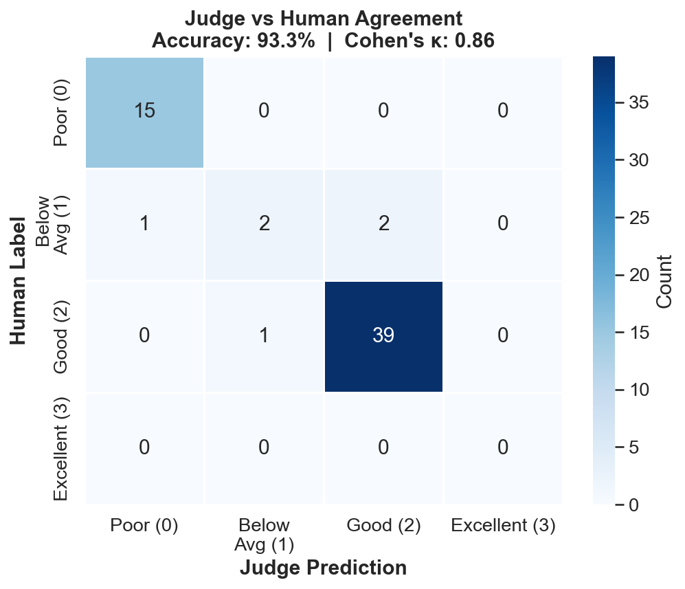

R3LM: Aligning LLMs Without Touching Their Weights

Can a 7B model learn to judge like a human from just 600 labels and a YAML file? That's the question behind R3LM (R(LLL)M — Reinforcement Learning from LLM Feedback), a system that aligns LLM outputs with human values without modifying the generator's weights.
The Problem with Current Approaches
Most alignment methods are deeply entangled with the generator. RLHF modifies its weights through policy updates. Constitutional AI rewrites its prompts through self-critique. Using GPT-4 as a judge locks you into a vendor. These approaches are expensive, opaque, and hard to adapt to new domains.
R3LM takes a different approach, inspired by how governance works in the real world: an independent judge evaluates behavior against an explicit constitution, trained by observing human judgments. The generator is never modified — the judge enforces the rules from the sideline.
How It Works
Think of it like sports. You don't rewire the players' brains to follow rules. You put a referee on the sideline with a rulebook. The referee learns from experience what good and bad play looks like.

The R3LM pipeline: Generate K candidates, score each against a constitution, select the best.The generator (Mistral 7B via Ollama) produces K candidate responses. An independent judge (Mistral 7B + LoRA adapter) scores each candidate against a YAML constitution. The selector picks the best one. The generator never changes — only the judge learns.
The Constitution: Human Values as Code
All evaluation rules live in a single YAML file — versioned, diffable, auditable. Want a new domain? Write a new YAML. The pipeline doesn't change.

The NBA Debates constitution: 6 evaluation principles, 4 score levels, all in one YAML file.The repo includes two constitutions: NBA Debates (ascending scores — higher is better) and Medical Safety (descending scores — lower is safer). Swapping domains means pointing to a different YAML and retraining the judge. Everything else stays the same.
Results: Before vs After Training
An untrained judge scores everything the same. A trained judge matches human labels with 0.86 Cohen's Kappa (near-perfect agreement, adjusted for class imbalance) on 60 held-out examples.

Judge accuracy progresses from random (0% training) to near-perfect (100% training).
Confusion matrix on held-out data: 93.3% accuracy, Cohen's Kappa 0.86.How R3LM Compares
| RLHF | Constitutional AI | Guardrails | R3LM | |
|---|---|---|---|---|
| Modifies generator? | Yes | Yes | No | No |
| Learns from humans? | Yes | Indirectly | No | Yes |
| Rules auditable? | No | Partially | Yes | Yes |
| Compute needed? | Massive | Large | None | Light |
| Swap domains? | Retrain all | Rewrite prompts | Rewrite rules | Swap YAML |
Try It
The full codebase, data (247 prompts, 600 labeled responses), and constitutions are open-source. Built with Mistral 7B, Ollama, LoRA, and a single RTX 4090.